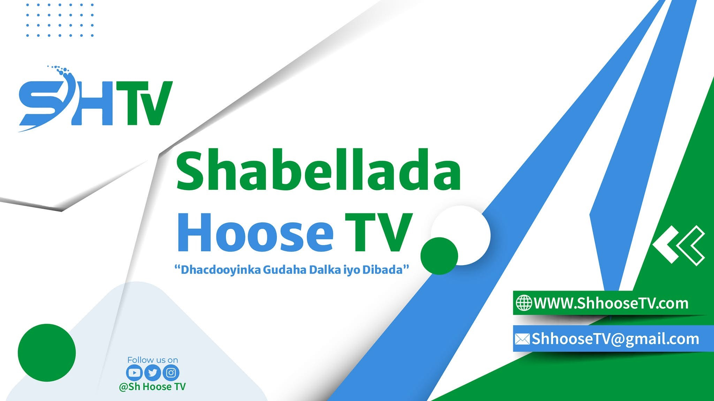

Shabeellada Hoose TV
Ku soo dhawoow bogga gaarka ah. Waa xarunta wararka, barnaamijyada iyo dhacdooyinka gobolka Shabeellada Hoose iyo guud ahaan dalka.
Ku noqo Bogga Hore
Ku soo dhawoow bogga gaarka ah. Waa xarunta wararka, barnaamijyada iyo dhacdooyinka gobolka Shabeellada Hoose iyo guud ahaan dalka.
Ku noqo Bogga Hore